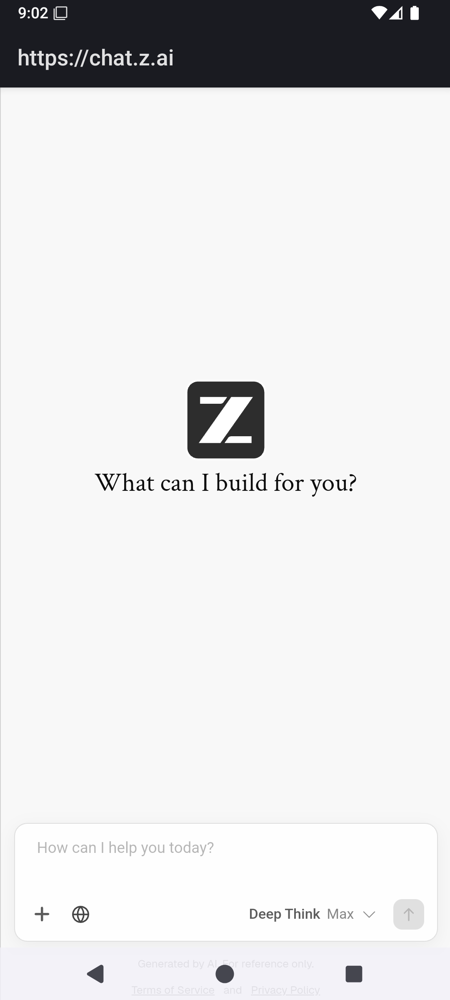
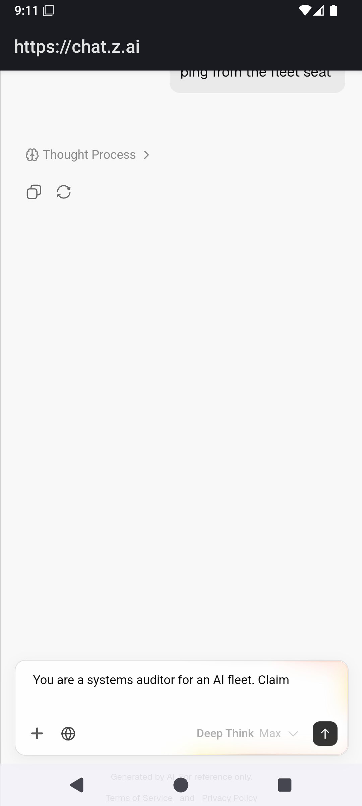

AI services we already pay for, running on headless android bodies, driven by fleet prompts over adb. Harvest surface for the intake lane. Text-first: every wall is named, never a blank page.
prompt: "You are a systems auditor for an AI fleet. Claim: a gate that passes is not proof a system is alive. In under 150 words give three numbered tests that distinguish an alive system from a merely passing one."
mechanics: PASS — PocketFleet APK → chat.z.ai guest session → prompt typed over adb
(input text, %s-escaped) → send tapped → request reached GLM-5.3-Flash web. Smoke prompt ("ping from the fleet seat")
was answered: "Auditor online. Fleet seat acknowledged."
wall: GUEST TIER REFUSES Deep Think requests — "No response, Please try again later." Two strikes filed; stopped per two-strike law. Gate = one operator login pass per service (~1 min each, sessions persist in the APK's cookies). That unlocks the paid web/app quotas — the actual free firehose.
scars: ADBKeyboard IME broadcast does not commit into this WebView (built-in input text does);
guest chat history does NOT survive app restart (harvest must be synchronous per turn);
the day-drive rig drives the same glass (~30s rotation) — phonesalon takes the glass, fires, harvests, releases.


Both bodies (medium_phone, watcher_2) run headless: -no-window -no-audio -gpu swiftshader_indirect.
adb stays loopback-only (127.0.0.1:5037). Supervision: scripts/android_warden.ps1 — restart-on-exit,
logs to watch/android_warden.log. Sanctioned host-side exception (AutoClaw precedent): redroid-in-docker is
hardware-BLOCKED on this Win10 host — receipted: no /dev/kvm in the Docker WSL2 VM
(kernel 6.18.33.2-microsoft-standard, no modules). Android-in-Docker lights up only on a Linux KVM node —
DOCKED for the next Linux box; on Mac it stays host-side (Docker-on-Mac has no KVM passthrough either).
Full headless receipt: boot → screenshot → deep-link → UI dump all pass with zero windows. Everything the phonesalon does is adb-level; the glass was never needed.
002: z.ai logged-in tier (operator pass) → the auditor prompt re-fired, full answer harvested here.
003: deepseek + qwen guest probes (same harness, one URL swap).
004: salon_phone runner v1 — prompt pack in, per-service screenshots + UI-dump text out into this page,
routing into the intake queue.
receipts: watch/ANDROID_EMULATOR_SELF_STEAL_20260904.md · queue/handoff/zcode/CONVO.md 09-04 · pngs: dashboard/static/phonesalon/